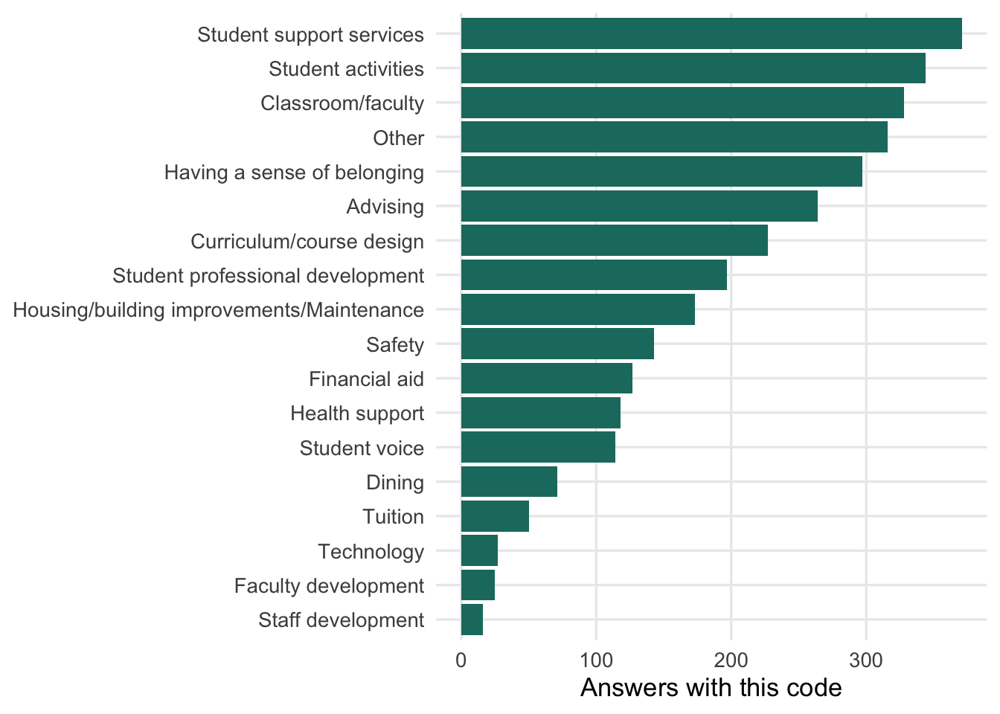
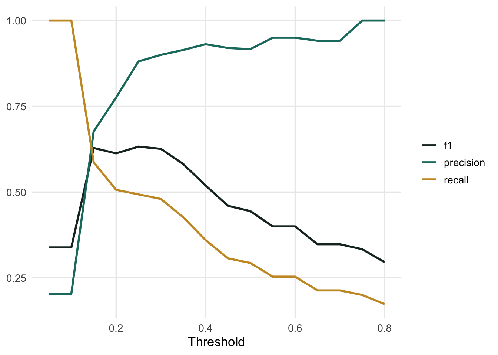
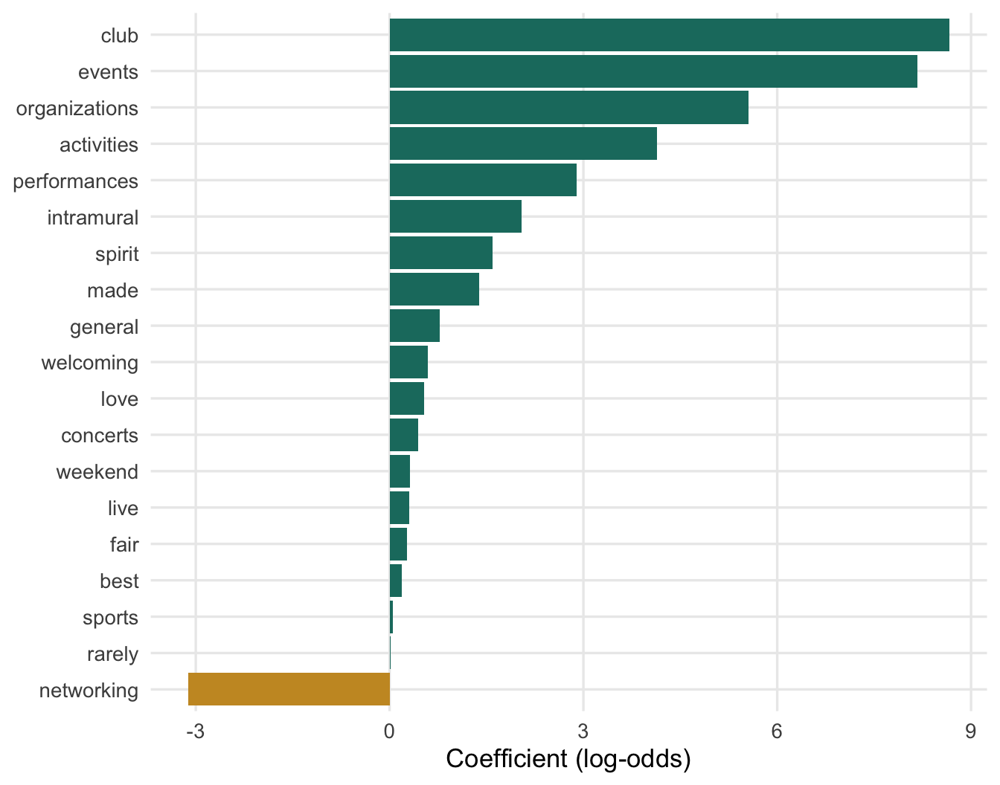
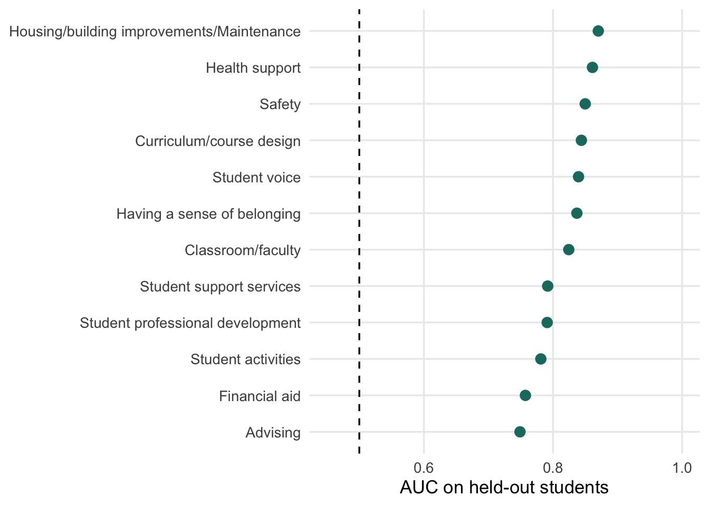

Loading required package: Matrix
Attaching package: 'Matrix'The following objects are masked from 'package:tidyr':
expand, pack, unpackLoaded glmnet 5.2Data for this chapter: data/vcu_cares_long.csv
Everything so far has been unsupervised: we asked the computer to find patterns without telling it what to look for. In supervised learning we give it an answer key. The model learns to reproduce the key from the text, and then we test it on answers it has not seen.
Our answer key is the interviewers’ topic codes. For most strength and concern answers in the original form, the interviewer ticked which topics the student discussed (Advising, Dining, Safety, and so on). Can a model look only at the words and predict those ticks?
By the end of this chapter you will be able to explain how a supervised model is trained and tested, build a model that predicts a topic code from text, and judge it with the measures that matter (and avoid the one that misleads).
Loading required package: Matrix
Attaching package: 'Matrix'The following objects are masked from 'package:tidyr':
expand, pack, unpackLoaded glmnet 5.2glmnet fits the model we use (a regularized regression, explained below). Matrix provides the efficient “sparse” matrices we build for it.
Think of how you would teach a new research assistant to code answers into topics. You would show them a stack of answers that have already been coded. They would notice patterns (“answers that mention dorm and rent are coded Housing”) and then try coding new answers on their own. To check how well they learned, you would give them answers they have not seen and compare their codes to the correct ones.
A supervised model does the same, with three pieces:
The held-back test data is the crucial piece. A model can always do well on data it has already seen, just by memorizing it. The only fair question is how it does on new answers.
Hand-coding is slow. If a model can reproduce the codes reasonably well, it can code new batches of interviews, flag answers for a second human look, or show which words an interviewer was responding to. The value depends on how well, and “how well” has to be measured on data the model never saw.
Only answers with at least one topic code can teach or test the model.
[1] 1897filter(!is.na(topics)) keeps answers that have a topic code (the ! means “not,” so “not missing”).text_id = row_number() gives every kept answer a new ID, 1, 2, 3, and so on, which we will use to line up rows with matrix positions.str_split(topics, ";\\s*") splits each answer’s codes, stored as a single string like “Advising; Safety,” into a list of separate codes ("Advising", "Safety"). The pattern ;\\s* means “a semicolon followed by any spaces.” The topics column now holds a list for each answer.Each answer can have several codes, so this is a multi-label problem. The easiest way to handle that is to treat each topic as its own yes/no question: “Is this answer about Advising?” “Is it about Safety?” Let us see how common each topic is.

unnest(topics) is the opposite of the splitting we just did: it turns each list of codes into separate rows, one per code, so we can count them. mutate(pct = ...) records each code’s share of all labeled answers.
Some topics are common (“Student activities”), and some are rare (“Staff development”). Rare topics will be hard to learn: with only a dozen examples, there is little for the model to generalize from. We start with one topic and then scale up.
[1] 0.181339target <- "Student activities" names the topic we will predict. Change it to try another.map_lgl(topics, \(t) target %in% t) goes through each answer’s list of codes and asks “is the target one of them?”, returning TRUE or FALSE for each. (map_lgl is a function that applies a small function to each item and returns logical values. The \(t) ... is the small function: “given a list of codes t, check whether the target is in it.”)y. By tradition, y is the thing we want to predict, called the outcome or label.mean(labeled$y) gives the share of TRUE values, which is the share of answers carrying this code.About one answer in five carries this code. That imbalance matters for how we judge the model, as we will see.
We will hold back 20% of the data to test the model. Two rules:
resp_id keeps each student on one side.train test
1529 368 set.seed(664) makes the random split reproducible (see Appendix A).unique(labeled$resp_id) lists each student once.sample(students, size = ...) picks a random set of students. round(0.2 * length(students)) is 20% of them.train has answers from students not in the test set (!resp_id %in% test_students), and test has answers from students who are.c(train = ..., test = ...) prints the two sizes side by side.A statistical model cannot read words. It needs numbers: a matrix with one row per answer and one column per word. We use TF-IDF weights from Chapter 3. The key discipline is that the vocabulary and the idf values come only from the training data, and the test set is converted using those same values.
stops <- stop_words |> filter(lexicon == "snowball")
tokenize <- function(d) {
d |>
select(text_id, text) |>
unnest_tokens(word, text) |>
anti_join(stops, by = "word") |>
filter(!str_detect(word, "^\\d+$"))
}
train_tok <- tokenize(train)
# Vocabulary: words that appear in at least 5 training answers
vocab_df <- train_tok |>
distinct(text_id, word) |>
count(word, name = "df") |>
filter(df >= 5) |>
mutate(idf = log(nrow(train) / df))
length(vocab_df$word)[1] 376# Convert any set of answers to a TF-IDF matrix over the training vocabulary
featurize <- function(d) {
tok <- tokenize(d) |>
count(text_id, word) |>
inner_join(vocab_df, by = "word") |>
group_by(text_id) |>
mutate(tf = n / sum(n)) |>
ungroup()
sparseMatrix(
i = match(tok$text_id, d$text_id),
j = match(tok$word, vocab_df$word),
x = tok$tf * tok$idf,
dims = c(nrow(d), nrow(vocab_df)),
dimnames = list(NULL, vocab_df$word)
)
}
x_train <- featurize(train)
x_test <- featurize(test)
dim(x_train); dim(x_test)[1] 1529 376[1] 368 376This block has the most new code so far. It is easier to read as three pieces.
Piece 1: a reusable function, tokenize(). We have been writing steps one at a time; here we package a series of steps as our own function so we can reuse it. function(d) { ... } defines a recipe that takes a table d, and the lines inside the braces { } are the steps. This one keeps the ID and text columns, splits into words, removes stop words, and removes numbers. Whatever the last line produces is what the function returns. Once defined, tokenize(train) runs the whole recipe on the training data.
Piece 2: the vocabulary, from training data only. train_tok holds the training words. Then:
distinct(text_id, word) keeps one row per answer-word pair, and count(word, name = "df") counts how many different answers contain each word. We name that count df (for document frequency).filter(df >= 5) keeps only words found in at least five training answers.mutate(idf = log(nrow(train) / df)) computes each word’s IDF, the rarity score from Chapter 3, using the number of training answers. log() is the natural logarithm.We then print how many words survive.
Piece 3: a second function, featurize(), that builds the matrix. It takes any set of answers d and produces a TF-IDF matrix using the training vocabulary.
inner_join(vocab_df, by = "word")), and computes each word’s TF (tf = n / sum(n), the share of the answer’s words that this word is, calculated within each answer thanks to group_by(text_id)). It then has everything needed for TF-IDF.sparseMatrix() builds the matrix. You tell it, for each non-zero cell, which row (i), which column (j), and what value (x). Here i is the answer’s position, j is the word’s position in the vocabulary (match() finds a position by lookup), and x is tf * idf, the TF-IDF score. dims fixes the matrix’s size and dimnames labels the columns with the words.We then build one matrix for training and one for testing, and print their sizes (dim() gives rows and columns). Notice they have the same number of columns but different numbers of rows.
Both matrices have the same columns, which is what lets a model trained on one score the other. Words in the test set that never appeared in training are simply ignored: the model has nothing to say about them.
The matrix is sparse: nearly every cell is zero, since each answer uses only a handful of the few hundred vocabulary words. Storing it as a sparse matrix keeps it small.
Now the model itself. We use logistic regression, a standard method for predicting a yes/no outcome. It produces, for each answer, a probability that the answer carries the code (for instance, 0.83 means “83% likely”). It does so by giving each word a coefficient: a number saying how strongly that word pushes the prediction toward “yes” (positive) or “no” (negative).
The problem is that we have hundreds of words and only a modest number of answers. A plain regression would latch onto every quirk of the training data, which is called overfitting. The fix is regularization: adding a penalty on the size of the coefficients, so the model only keeps a word if it earns its place. We use the lasso, a kind of regularization that pushes most coefficients all the way to zero. The result is a short list of words that matter, which is easy to read.
[1] 0.01971828[1] 19cv.glmnet() fits the model. The options that matter:
| Option | What it means |
|---|---|
x_train |
The matrix of word scores (the features) |
train$y |
The yes/no outcome to learn |
family = "binomial" |
“The outcome is yes/no,” which makes this logistic regression |
alpha = 1 |
Use the lasso penalty. (Setting it to 0 gives a different penalty, called ridge, that shrinks coefficients but does not zero them out. Values in between mix the two) |
type.measure = "auc" |
The score used to choose the penalty strength. AUC is explained shortly |
How strong should the penalty be? The strength is called lambda. Too small and the model overfits; too large and it ignores everything. cv.glmnet() finds a good value using cross-validation: it splits the training data into pieces, repeatedly trains on most of the pieces and tests on the one left out, and averages the results across many lambda values. (The test data we set aside is never touched during this.)
fit$lambda.1se prints the chosen penalty strength. It is the largest penalty whose score is within one standard error of the best, which gives a simpler model that usually generalizes about as well as the single best one. (The alternative, fit$lambda.min, picks the single best.)coef(fit, s = "lambda.1se") extracts the coefficients; [-1] drops the first one (the intercept, a baseline that is not a word); != 0 asks which are not zero; and sum() counts the TRUEs.test$p <- as.numeric(predict(fit, x_test, s = "lambda.1se", type = "response"))
head(test |> select(text, y, p), 6)# A tibble: 6 × 3
text y p
<chr> <lgl> <dbl>
1 getting help when needed, which made my first year easier. The li… TRUE 0.172
2 Barriers around study space renovations. I'd gladly help if someo… FALSE 0.111
3 Enjoyed the support for students FALSE 0.111
4 Confusing chances to give feedback FALSE 0.111
5 financial aid paperwork FALSE 0.111
6 The people - needs attention, more support with wait times for th… FALSE 0.111predict() applies the fitted model to new data. We give it the test matrix (x_test), the penalty to use (s = "lambda.1se"), and type = "response", which asks for probabilities instead of raw scores. as.numeric() converts the result to a plain list of numbers, and we store it as a new column p in the test table. The last line shows six answers with the true label y and the model’s probability p.
Each answer gets a predicted probability. To turn it into a yes/no call, pick a threshold: calls above it are “yes,” the rest “no.” Start at 0.5, and note that this is a choice.
metrics <- function(truth, p, threshold = 0.5) {
pred <- p >= threshold
tp <- sum(pred & truth); fp <- sum(pred & !truth)
fn <- sum(!pred & truth); tn <- sum(!pred & !truth)
precision <- if (tp + fp > 0) tp / (tp + fp) else NA_real_
recall <- tp / (tp + fn)
tibble(tp, fp, fn, tn,
accuracy = (tp + tn) / length(truth),
precision, recall,
f1 = 2 * precision * recall / (precision + recall))
}
# Area under the ROC curve: the chance a random positive outranks a random negative
auc <- function(truth, p) {
r <- rank(p)
n1 <- sum(truth); n0 <- sum(!truth)
(sum(r[truth]) - n1 * (n1 + 1) / 2) / (n1 * n0)
}
metrics(test$y, test$p)# A tibble: 1 × 8
tp fp fn tn accuracy precision recall f1
<int> <int> <int> <int> <dbl> <dbl> <dbl> <dbl>
1 22 2 53 291 0.851 0.917 0.293 0.444auc(test$y, test$p)[1] 0.7811604These are two more functions we wrote ourselves. metrics() takes the true answers (truth), the model’s probabilities (p), and a threshold (with a default of 0.5, written threshold = 0.5, so you can leave it out), and counts four kinds of outcome:
| Model says YES | Model says NO | |
|---|---|---|
| Truly yes |
tp (true positive: correct hit) |
fn (false negative: a miss) |
| Truly no |
fp (false positive: false alarm) |
tn (true negative: correct rejection) |
This 2×2 grid is called a confusion matrix. Everything below is calculated from its four cells. pred <- p >= threshold makes the yes/no calls, and each sum(pred & truth) counts the answers where both are TRUE, and so on. (The & means “and.”)
Read the output before the definitions. At a threshold of 0.5 the model is cautious: when it says “Student activities” it is nearly always right (high precision), but it says so rarely and misses most of the real ones (low recall). The AUC of about 0.8 says the probabilities do carry useful signal; the 0.5 cutoff is just not the best place to draw the line.
Five numbers deserve plain definitions:
auc() function computes it from the ranks of the predictions.A model that says “no” to every answer gets an accuracy equal to the share of “no” answers:
1 - mean(test$y)[1] 0.7961957That is the bar to beat. Our model’s accuracy is only a few points above it, even though the model is clearly doing something useful, which is why accuracy is a poor yardstick when one class is rare. Precision, recall, and AUC tell you much more.
Lowering the threshold finds more true answers (recall rises) but also flags more wrong ones (precision falls).
map_dfr(seq(0.05, 0.8, by = 0.05),
\(th) metrics(test$y, test$p, th) |> mutate(threshold = th)) |>
select(threshold, precision, recall, f1) |>
pivot_longer(-threshold) |>
ggplot(aes(threshold, value, color = name)) +
geom_line(linewidth = 1) +
scale_color_manual(values = c(f1 = vcu_dark, precision = vcu_teal, recall = vcu_gold)) +
labs(x = "Threshold", y = NULL, color = NULL)
seq(0.05, 0.8, by = 0.05) makes a list of thresholds from 0.05 to 0.8 in steps of 0.05.map_dfr(..., \(th) metrics(...)) runs our metrics() function once for each threshold and stacks the results into one table, adding a threshold column.pivot_longer(-threshold) reshapes the table (the reverse of pivot_wider): the columns for precision, recall, and F1 are gathered into one name column and one value column, which is the shape ggplot needs to draw three lines. The -threshold means “everything except this column.”color = name draws a separate colored line for each measure.Which threshold is right depends on the job. If a human will review every flagged answer, favor recall: you do not want to miss any. If the model’s calls go straight into a report, favor precision.
The lasso gives us a readable answer. The words with the largest positive coefficients push toward “Student activities”; the most negative push away.
coefs <- coef(fit, s = "lambda.1se")
coef_df <- tibble(word = rownames(coefs), beta = as.numeric(coefs)) |>
filter(word != "(Intercept)", beta != 0)
coef_df |>
slice_max(abs(beta), n = 24) |>
ggplot(aes(beta, reorder(word, beta), fill = beta > 0)) +
geom_col(show.legend = FALSE) +
scale_fill_manual(values = c(`TRUE` = vcu_teal, `FALSE` = vcu_gold)) +
labs(x = "Coefficient (log-odds)", y = NULL)
The first part pulls the coefficients into a table with one row per word, dropping the intercept and any word whose coefficient the lasso set to zero. The chart keeps the 24 words with the largest coefficients in either direction (abs() takes the absolute value, ignoring sign) and colors each bar by whether it is positive (teal) or negative (gold) (fill = beta > 0).
The units are log-odds. You do not need to interpret them precisely: a positive number means the word makes “yes” more likely, a negative one makes it less likely, and a bigger number is a stronger push.
Do these words make sense for the topic? If you see “events,” “clubs,” and “organizations” pushing up, the model learned something real. If you see odd words, such as the name of one interviewer’s favorite example, it is learning quirks of the data, and you should be skeptical.
The most useful thing you can do with a classifier is read where it is wrong.
# Missed: coded as the topic, but given the lowest probabilities
test |>
filter(y) |>
arrange(p) |>
slice_head(n = 6) |>
select(p, text)# A tibble: 6 × 2
p text
<dbl> <chr>
1 0.111 teaching assistants
2 0.111 Solid system. Good graduation checks.
3 0.111 How things are run - they really try
4 0.111 consistency between offices
5 0.111 Compared to other schools, the support for students are ahead, thankful…
6 0.111 Too expensive: the overall experience. Problems with the chances to giv…# False alarms: not coded as the topic, but given the highest probabilities
test |>
filter(!y) |>
arrange(desc(p)) |>
slice_head(n = 6) |>
select(p, text)# A tibble: 6 × 2
p text
<dbl> <chr>
1 0.718 networking events - very helpful
2 0.545 The networking events kept me on track.
3 0.358 The opportunities here here are strong and I appreciate the capstone pr…
4 0.313 I'd say the networking events stands out. My roommate had the opposite …
5 0.299 Love the campus in general.
6 0.248 Love the system. Easy to use: the networking events, i appreciate the c…The first block takes the answers that were coded with the topic (filter(y)), sorts them by the model’s probability from lowest to highest (arrange(p)), and shows the first six: the ones the model was most sure were not the topic. The second block does the reverse: answers that were not coded (filter(!y)), sorted from highest probability down (arrange(desc(p))): the ones the model was most sure were the topic.
Mistakes usually fall into three bins. Some are real model failures: the answer is clearly about activities, and the model missed it, often because it uses a word the training data never saw. Some are label noise: the answer is not really about activities, and the interviewer ticked the box anyway, or the reverse. And some are judgment calls that two human coders would disagree about. If many errors are the second and third kind, the model’s ceiling is limited by the labels, not by the algorithm.
The lists above show examples of each. Among the missed answers, several barely mention the topic they were coded with: the code is there, but the words are not. That is label noise, and the model cannot be blamed for failing to find words that are not in the text. Among the false alarms, many are about networking and professional events, which are near the Student activities topic but were coded under professional development instead. Whether they belong is a coding-scheme question that no algorithm can settle.
The same recipe works for any topic. We wrap it in a function and run it for the topics with enough examples. Because we reuse the vocabulary and the split, the comparison across topics is fair.
fit_topic <- function(topic) {
y_tr <- map_lgl(train$topics, \(t) topic %in% t)
y_te <- map_lgl(test$topics, \(t) topic %in% t)
set.seed(664)
f <- cv.glmnet(x_train, y_tr, family = "binomial", alpha = 1, type.measure = "auc")
p <- as.numeric(predict(f, x_test, s = "lambda.1se", type = "response"))
# Use each topic's own base rate as a data-driven threshold
th <- mean(y_tr)
bind_cols(
tibble(topic = topic, prevalence = mean(y_te), auc = auc(y_te, p)),
metrics(y_te, p, threshold = th) |> select(precision, recall, f1)
)
}
common_topics <- topic_counts |> filter(n >= 80) |> pull(topics)
common_topics <- setdiff(common_topics, "Other")
results <- map_dfr(common_topics, fit_topic) |> arrange(desc(auc))Warning: from glmnet C++ code (error code -55); Convergence for 55th lambda
value not reached after maxit=100000 iterations; solutions for larger lambdas
returnedresults |> mutate(across(where(is.numeric), \(x) round(x, 2)))# A tibble: 12 × 6
topic prevalence auc precision recall f1
<chr> <dbl> <dbl> <dbl> <dbl> <dbl>
1 Housing/building improvements/Mainte… 0.07 0.87 0.37 0.74 0.49
2 Health support 0.07 0.86 0.68 0.63 0.65
3 Safety 0.07 0.85 0.31 0.58 0.41
4 Curriculum/course design 0.09 0.84 0.61 0.72 0.66
5 Student voice 0.07 0.84 0.39 0.72 0.51
6 Having a sense of belonging 0.19 0.84 0.72 0.61 0.66
7 Classroom/faculty 0.15 0.82 0.9 0.61 0.73
8 Student support services 0.19 0.79 0.63 0.63 0.63
9 Student professional development 0.12 0.79 0.6 0.58 0.59
10 Student activities 0.2 0.78 0.72 0.56 0.63
11 Financial aid 0.06 0.76 0.59 0.57 0.58
12 Advising 0.14 0.75 0.62 0.5 0.55fit_topic() is a third function of our own. Given a topic name, it repeats everything we just did: builds the yes/no outcome for that topic in the training and test sets, fits the lasso, predicts for the test set, and returns one row of results (the topic, how common it is, AUC, precision, recall, and F1). A few details:
th <- mean(y_tr)). That is a rough and reasonable choice, because rare topics need a lower bar than common ones. (At 0.5, rare topics would almost never be flagged.)bind_cols() joins two small tables side by side.After defining it, we select the topics worth modeling: those with at least 80 labeled answers (filter(n >= 80)), excluding the catch-all “Other” (setdiff() removes items from a list). map_dfr(common_topics, fit_topic) then runs fit_topic() for each, stacking the rows, and arrange(desc(auc)) sorts the best-predicted topic to the top. The last line rounds all the number columns to two decimals (across(where(is.numeric), ...) means “every column that holds numbers”).
ggplot(results, aes(auc, reorder(topic, auc))) +
geom_point(size = 3, color = vcu_teal) +
geom_vline(xintercept = 0.5, linetype = "dashed") +
xlim(0.45, 1) +
labs(x = "AUC on held-out students", y = NULL)
This plots each topic’s AUC as a dot. The dashed line at 0.5 marks chance; dots to its right mean the model beats guessing. (xlim(0.45, 1) sets the horizontal range.)
In this synthetic data, how well a topic is predicted mostly reflects how many examples it has and how much noise was built in, not how abstract the topic is. With real interviews you would expect a wider spread: concrete topics such as housing or financial aid tend to be easy, because students use distinctive words for them, while abstract topics such as “sense of belonging” tend to be harder, because students express them in many different ways. When that happens, a topic’s difficulty tells you something about the topic as much as about the model.
Two cautions on reading this table. First, each topic is scored on a single test split with only 20 to 75 true cases, so differences of a few hundredths in AUC are noise. Second, you may see a glmnet convergence warning on some topics. It means the optimizer did not finish for the very smallest penalties on a weak-signal topic, and glmnet returns the solutions for the larger penalties instead. It is worth knowing about but does not invalidate the table.
| Unsupervised (Ch. 3-6) | Supervised (this chapter) | |
|---|---|---|
| Needs labels | No | Yes |
| Answers the question | “What patterns are in here?” | “Can we reproduce these codes?” |
| Measures success against | Your judgment | A held-out answer key |
| Biggest risk | Seeing patterns that are not there | Learning the labelers’ habits and quirks |
A good model does not prove the labels are right. It shows that the labels are learnable: that the text contains enough signal for a computer to reproduce what the interviewers did. That is a useful result, but it is a smaller claim than “the model understands student concerns.”